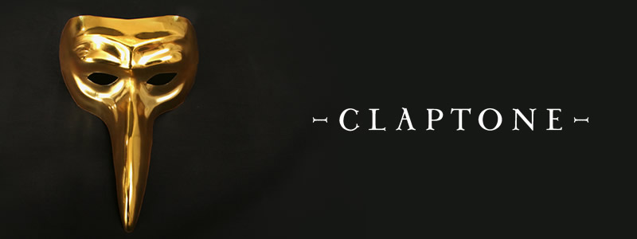

Claptone: "I was given my golden mask a hundred years before Daft Punk"
{kind=link}

Many would have grown acquainted with Claptone via his memorable ‘No Eyes’ anthem last year. Heating up just in time for the European summer, it was enough of a house anthem to raise an instant cheer when those magic chords rang out over the speakers. Not to mention the fact the record’s original vocal from dOP member Jaw was also good enough to turn heads.
And ‘No Eyes’ set the trend for the work we’ve heard from the Berlin-based producer since, with strong vocals becoming his touchpoints. ‘Ghost’ from this year saw him working with Philadelphia band Clap Your Hands Say Yeah, while the recent remixes he’s turned in for the likes of Pet Shop Boys and indie-dance acts The Klaxons and Rüfüs reflect his rapidly growing affinity with the singer-songwriter format.
That’s not all Claptone’s about though. Aligned with Berlin’s renowned Exploited Records stable, and interested in conjuring an enigma via his trademark gold mask he wears when he performs, there’s a dash of humor to the Claptone experience. Combine this with a knack for classic house sounds, balanced cleverly with an emotional resonance that goes beyond functional club grooves, and it make him a house name worth keeping your eyes on. I Voice sat down with Claptone prior to his gig at BoOom; naturally, he was adorned with his gold mask to appropriately conceal his identity.
Hope all is going well in 2014. What have been the highlights of the year so far?My sound aims to touch your heart and soul. It is very organic funky and deep. I am not ashamed of a beautiful melody, and I am never shy of an infectious groove...Yes my 2014 has been great so far. You know I’m a creature of the night and I prefer the dark to the bright, so it’s almost too many highlights blinding me. All of the great gigs make it very difficult to just pick one or two and tell you that these were the best. That would just not be fair. From Europe to Asia to North and South America to Australia, the crowds have been amazing.
How would you define the ‘Claptone sound’ yourself?My sound aims to touch your heart and soul. It is very organic funky and deep. I am not ashamed of a beautiful melody, and I am never shy of an infectious groove.
What led you to working with so many vocalists?The success of ‘No Eyes’ gave me confidence in working on songs that you can listen to everywhere. Whether this be in the club or at home, on the beach or when making love. Some might even listen when making love on the beach.
The relationship with Exploited Records is another defining thing for Claptone, you’re one of their key artists. How did it develop, and will it continue into the future?Exploited is a great label with a lot of musical taste. They don’t only bring you great tracks that work in the club but they also dare putting out songs which they love at the same time. Exploited puts their heart into what they do. You can hear the love and it’s real. Same goes for me. If you’d stab Claptone, there would be real blood dripping from my chest.
You’ve only been producing as Claptone for a short amount of time; I guessed you might have more of a musical background behind you. What was prior to your Claptone alias?I am Claptone. I was given my golden mask a hundred years before Daft Punk were built. But I can approve of their doings...I have always been Claptone, but I made my music in the dark for many years. I didn’t make an effort to release my compositions as it wasn’t relevant for me. That changed when I started playing my music to people as a DJ, and when I met Exploited who I felt would understand my sonic creations and be able to present them to the people.
You seem interested in conjuring some Daft Punk style mystique, DJing in a gold mask. What inspired it?I am Claptone. I was given my golden mask a hundred years before Daft Punk were built. But I can approve of their doings. I like robots in general and I have sympathy for their creations because they as well worship sound rhythm and melody. Personally I was not amused when they stole my champagne from my backstage room of Peakock Festival in Paris. I have forgiven them though, because it’s all about love.
You’ve got a lot of gigs at the moment, everywhere from Berlin to Brazil to Ibiza. When did touring become a big component for you?I need to be in touch with the people through sound. When working in the studio it’s a rather theoretical type of communication. Playing a DJ set in a club you can be close to the people and touch their souls with your sound. I like that. What I don’t like is people taking photographs of me in the club instead of dancing. You can never catch the vibe of a great night on an iPhone picture or video so please people when you come to a Claptone gig, open your heart, enjoy the music, get carried away, get enchanted, let yourself go, but leave your phone in your pockets.
I’d say the Claptone sound has very much a resonance with classic house grooves, and looking at approaching this in new and interesting ways. How do you see it yourself?When you come to a Claptone gig, open your heart, enjoy the music, get carried away, get enchanted, let yourself go, but leave your phone in your pockets.It is not important how I perceive myself or my music. It is people like you who should be inspired by it. If it reminds you of something, if it evokes emotions in you, then it has not been in vain.
You’re based in Berlin, a city that has a lot of very serious house and techno. How do you place yourself amongst all of that, do you feel you offer anything different at all?I love Berlin for its diversity and open mindedness. I don’t feel as if I am a Berliner though, I don’t see myself as German either. I am part of the world community living in, feeding from and adding on to a universe of sound.
We’re hearing whispers that you’ve got your debut album due for later this year. Give us a few details about what we can expect! Don’t hold out on us.You know I love my secrets and unfortunately this has to stay a secret for now.
Ibiza Dates
18/08/14 - Toolroom Knights Ibiza @ Booom Ibiza
08/09/14 - Ibiza Rocks House @ Pacha Ibiza